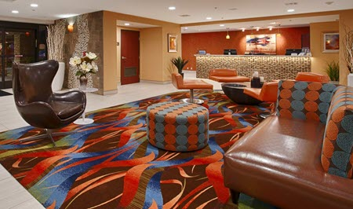
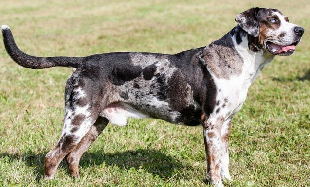

Reverse Image Lab
Below are images that you need for the SEC487 reverse image search lab. Instructions are in your lab books.
Carpet
Dog
Car
Landscape

Below are images that you need for the SEC487 reverse image search lab. Instructions are in your lab books.